Spanning Tree
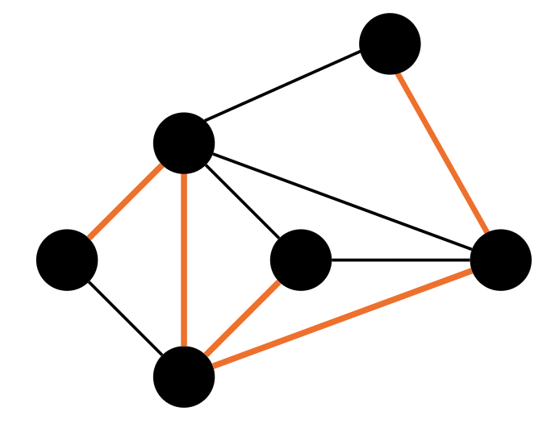
Uno spanning tree (in italiano: albero di copertura) di un grafo connesso \(G=(V,E)\) è un sottografo \(T=(V,E’)\) tale che:- contiene tutti i vertici di \(G\) (quindi “spanning” = che copre/spazia su tutti i nodi):$\(V(T)=V(G)\)$
- usa solo alcuni archi del grafo originale: $\(E’ \subseteq E\)$
- è un albero, cioè è connesso e aciclico (non contiene cicli).
Proprietà super importante Se \(G\) è connesso e ha \(n=|V|\) nodi, allora ogni spanning tree ha esattamente \(n-1\) archi. È la proprietà classica degli alberi; nel testo CLRS viene richiamata quando parla di spanning tree come sottoinsieme aciclico che connette tutti i vertici.
Nei protocolli distribuiti spesso si costruisce prima uno spanning tree e poi si eseguono broadcast/traversal solo sull’albero per ridurre i messaggi: sull’albero, ad esempio, il broadcast costa esattamente \(n-1\) messaggi.
Cosa “sanno” i nodi a fine costruzione Nel problema SPT (spanning tree construction) in ambiente distribuito, alla fine non è richiesto che un nodo conosca tutto \(T\): ogni nodo \(x\) deve selezionare localmente un insieme Tree-neighbors(x) ⊆ N(x) che rappresenta quali vicini sono collegati a lui nell’albero.
Spanning Tree Construction (SPT)
Problema e output “locale”
Dato un grafo connesso \(G=(V,E)\), vogliamo costruire uno spanning tree \(T=(V,E')\) con \(E'\subseteq E\) e \(T\) aciclico e connesso. Nella versione distribuita, alla fine ogni nodo non conosce tutto l’albero, ma solo quali tra i suoi vicini sono collegati a lui tramite un arco di \(T\) (variabile tipo Tree-neighbours(x)).
Assunzioni: - Single initiator, link bidirezionali, affidabilità totale, grafo connesso.
Idea 1: costruire lo spanning tree “da broadcast”
C’è un fatto generale molto utile: l’esecuzione di un qualunque protocollo di broadcast (con unico iniziatore) induce uno spanning tree: per ogni nodo \(x\neq s\), definisci parent(x) come il vicino da cui \(x\) riceve l’informazione per la prima volta; la relazione “parent” definisce un albero radicato nell’iniziatore.
Ma attenzione: sapere solo parent(x) non basta per risolvere SPT come definito nel corso/libro, perché ogni nodo deve anche determinare chi sono i figli e quali vicini non sono tree-neighbors; questo richiede ulteriore “feedback” (es. messaggi YES/NO).
Protocollo SHOUT
costruzione per “richieste Q” + risposte YES/NO
Intuizione: l’iniziatore chiede ai vicini di diventare suoi vicini nell’albero; ogni nodo dice YES solo alla prima richiesta che riceve (scegliendo così il proprio parent) e risponde NO alle richieste successive.
Stati: - \(S=\{\text{INITIATOR},\text{IDLE},\text{ACTIVE},\text{DONE}\}\) - \(S_{init}=\{\text{INITIATOR},\text{IDLE}\}\) - \(S_{term}=\{\text{DONE}\}\)
Messaggi: - \(Q\) richiesta di collegamento - \(YES/NO\) risposta
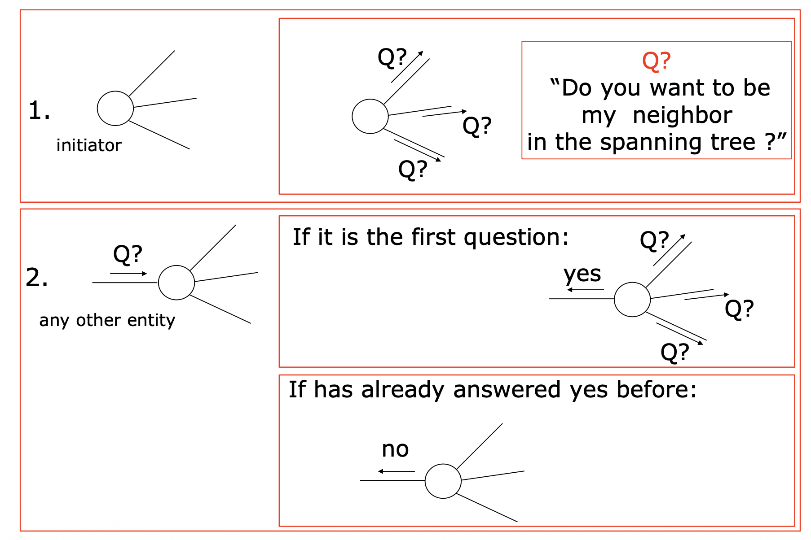
Variabili tipiche:
- parent, root, Tree-neighbours(x) (insieme dei vicini in \(T\)), counter (conta le risposte ricevute dai vicini).
Correttezza (idea chiave):
- Ogni nodo (tranne l’iniziatore) manda esattamente un YES ⇒ ogni nodo sceglie un solo parent.
- La relazione costruita da Tree-neighbours definisce un albero connesso che contiene tutti i nodi (terminazione locale).
Pseudocodice
Entità INITIATOR
quando parte:
root ← true
TreeNeighbours ← ∅
send Q to N(x)
counter ← 0
status ← ACTIVE
Entità IDLE
riceve Q da sender:
root ← false
parent ← sender
TreeNeighbours ← {sender}
send YES to parent
counter ← 1
if counter = |N(x)| then
status ← DONE
else
send Q to N(x) \ {sender}
status ← ACTIVE
Entità ACTIVE
riceve Q da sender:
send NO to sender
riceve YES da sender:
TreeNeighbours ← TreeNeighbours ∪ {sender}
counter ← counter + 1
if counter = |N(x)| then status ← DONE
riceve NO da sender:
counter ← counter + 1
if counter = |N(x)| then status ← DONE
Calcolo complessità messaggi
Notazione
- Grafo \(G=(V,E)\)
- \(n=|V|\) numero di nodi
- \(m=|E|\) numero di archi
- \(N(x)\) = insieme dei vicini di \(x\)
- INITIATOR \(s\)
- Diametro \(D(G)\)
Intanto partiamo da quello che abbiamo già analizzato: sappiamo che il Flooding (broadcast) prevede \(2m-(n-1)\) messaggi.
Interpretazione intuitiva: in ogni arco passerebbero due messaggi se ogni nodo mandasse a tutti i suoi vicini il messaggio “\(2m\)”, ma nel flooding ottimizzato ogni nodo non-initiator “risparmi” 1 messaggio perché non rispedisce al sender ⇒ risparmi \(n-1\).
SHOUT = FLOODING + REPLY
Analizzando il caso dello SHOUT dobbiamo capire quanti messaggi vengono mandati per ogni tipo: Q, YES, NO.
Messaggi Q
Questi messaggi vengono inviati nella fase di flooding. Facciamo l'analisi di questi messaggi in base al tipo di arco (tree vs non-tree).
Nel worst case distinguiamo i casi:
-
Q–YES, dove la richiesta di entrare nell'albero è accettata (tree).
- Questi casi si verificano negli archi dello spanning tree: \(n-1\).
-
Q–Q, negli archi non-tree possono passare 2 messaggi Q dai due nodi (INITIATOR, o appena entrati in IDLE).
- Gli archi non appartenenti all'albero sono: \(m-(n-1)\)
- 2 Q per arco ⇒ \(2[m-(n-1)]\).
Quindi in totale abbiamo: $$ Q_{tot} = (n-1) + 2[m-(n-1)] = 2m - n + 1 $$
Messaggi NO
Sfruttiamo l'analisi fatta prima, i messaggi di NO si presentano nel caso in cui un nodo non sia entrato nello spanning tree, quindi la quantità di messaggi è uguale a Q - Q: $\(NO_{tot}=2m - n + 1\)$
Messaggi YES
Anche qui sfruttiamo l'analisi fatta prima, i messaggi di YES si presentano solo nel caso in cui un nodo sia entrato nello spanning tree, quindi: $\(YES_{tot}=n-1\)$
Sommando tutto
Semplificando diventa:
Quindi abbiamo $\(M(\text{SHOUT}) = 4m - 2n + 2 = 2\cdot(2m-n+1).\)$
In confronto al flooding abbiamo il doppio dei messaggi:
Possiamo ottimizzare?
Protocollo SHOUT+ (ottimizzazione: senza NO)
I messaggi NO sono superflui e potremmo dedurli: quando un nodo ACTIVE riceve una richiesta \(Q\), la interpreta implicitamente come “NO” (incrementa counter e basta).
In questo modo:
- su ogni link transitano esattamente due messaggi (o \(Q\)–YES oppure \(Q\)–\(Q\)), quindi:
$\(M(\text{SHOUT}^+) = 2m.\)$
Entità ACTIVE
riceve Q da sender:
counter ← counter + 1
if counter = |N(x)| then status ← DONE
riceve YES da sender:
TreeNeighbours ← TreeNeighbours ∪ {sender}
counter ← counter + 1
if counter = |N(x)| then status ← DONE
Importante: cosa succede con più iniziatori?
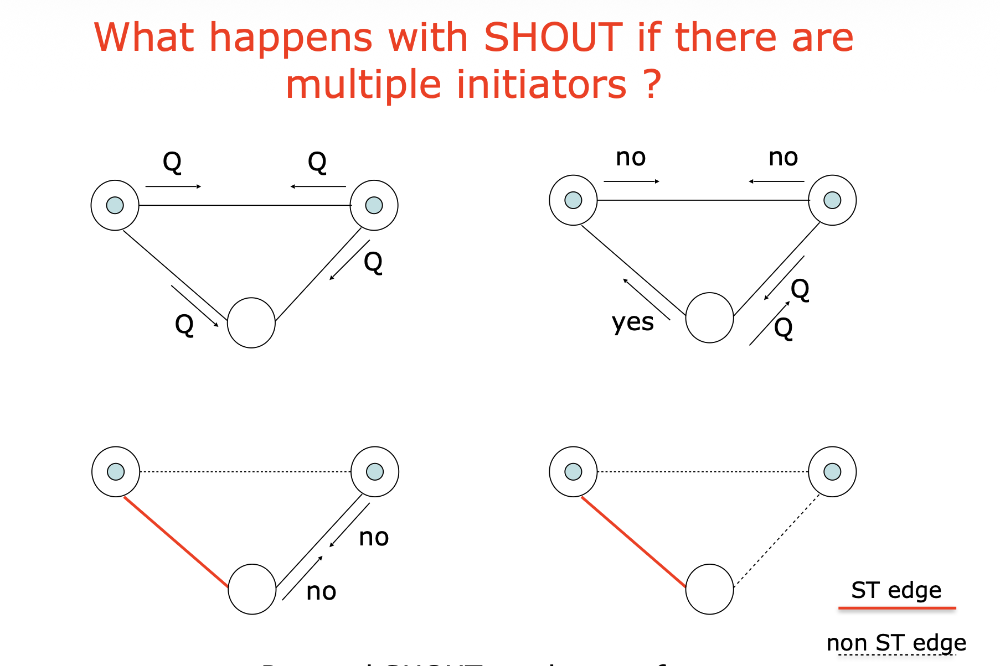
Se togli l’assunzione “single initiator”, i protocolli progettati per unico iniziatore possono fallire: ad esempio SHOUT con due initiator può costruire una foresta (non connessa).Risultato teorico (libro): SPT è deterministically unsolvable sotto le sole restrizioni standard \(R\) (cioè senza imporre un unico iniziatore o assunzioni extra).
Spanning Tree Construction by Traversal (Depth-First Traversal)
Un’altra famiglia di soluzioni costruisce lo spanning tree tramite una visita DFS distribuita usando un token (Forward/Return/Back-edge).
- Quando un nodo riceve il ForwardToken per la prima volta, memorizza chi lo ha inviato (quello è il parent) e prova a inoltrare il token a un vicino non visitato; se un nodo riceve di nuovo il ForwardToken su un arco, risponde con Back-edge token (quell’arco non è nell’albero).
- Eliminando i back-edge si ottiene lo spanning tree; parent(x) è chi ha inviato per primo il token, e i figli sono i vicini che non risultano back-edge.
(Questa parte è utile per capire che esistono costruzioni SPT anche “per traversal”, ma in genere SHOUT/SHOUT+ sono più puliti come costruzione locale dei Tree-neighbours.)
Spanning Tree Construction by Traversal
Depth-First Traversal (DFT)
Obiettivo e idea di base
Dato un grafo di comunicazione connesso \(G=(V,E)\), vogliamo costruire uno spanning tree usando una traversal (visita) che renda i nodi visited in modo sequenziale (uno alla volta). L’algoritmo parte da un initiator già visited, mentre tutti gli altri sono inizialmente unvisited.
Una traversal distribuita usa un messaggio speciale chiamato token: quando un nodo riceve il token, viene considerato visited. Se la traversal è depth-first, gli archi usati “alla prima visita” formano uno spanning tree.
Intuizione DFS: “si prova a mandare avanti il token il più possibile” (profondità), e si torna indietro solo quando non ci sono più vicini utili.
Restrizioni (assunzioni del modello)
- Single initiator
- Bidirectional links
- Connectivity
- Total reliability
Messaggi (tipi di token)
ForwardToken: esplora un vicino (passo “in avanti” DFS)ReturnToken: ritorna al parent dopo aver finito un sottoalberoBackEdgeToken: segnala che l’arco usato porta a un nodo già visited (quindi è una back-edge, non fa parte dell’albero)
Spanning tree ottenuto (root/parent/children)
Dopo l’esecuzione:
- Root = l’initiator
- Parent di \(x\) = il nodo da cui \(x\) ha ricevuto per la prima volta il token (il suo entry)
- Children di \(x\) = i vicini di \(x\) che non risultano collegati a \(x\) da una back-edge (in pratica: i vicini effettivamente esplorati come figli nel DFS)
Stato locale e variabili
Stati
$\(S=\{\text{INITIATOR, IDLE, VISITED, DONE}\}\)$ - Stati iniziali possibili: \(S_{init}=\{\text{INITIATOR, IDLE}\}\) - Stato terminale: \(S_{term}=\{\text{DONE}\}\)
Variabili locali per ogni nodo \(x\)
entry: il vicino da cui \(x\) ha ricevuto il primoForwardToken(definisce il parent)Unvisited: insieme dei vicini “ancora da provare”- iniziatore:
Unvisited := N(x) - nodo non iniziatore, alla prima ricezione:
Unvisited := N(x)\{sender} initiator: booleano per distinguere la radice
Operazione ausiliaria:
- pick(Unvisited): estrae un elemento dall’insieme e lo rimuove (così non lo riprovi).
Protocollo base: DFT (Depth-First Traversal)
Procedura comune VISIT
Idea: se ho ancora vicini non provati, mando il token a uno di loro; altrimenti torno al parent.
procedure VISIT:
if |Unvisited| > 0 then
next := pick(Unvisited)
send ForwardToken to next
diventa VISITED
else
if not(initiator) then
send ReturnToken to entry
diventa DONE // terminazione globale (se si tratta della radice)
INITIATOR
quando parte:
Unvisited := N(x)
initiator := true
esegue VISIT
IDLE
on receiving ForwardToken from sender:
entry := sender
Unvisited := N(x) \ {sender}
initiator := false
esegue VISIT
VISITED
on receiving ForwardToken from sender:
Unvisited := Unvisited \ {sender}
send BackEdgeToken to sender
on receiving ReturnToken:
esegue VISIT
on receiving BackEdgeToken:
esegue VISIT
Quando un nodo è DONE, non riceve più messaggi (ha concluso)
Esempio grafico
Legenda
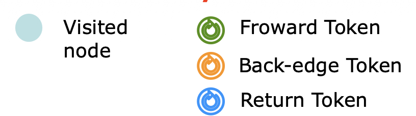
La root inizia a mandare il Forward Token
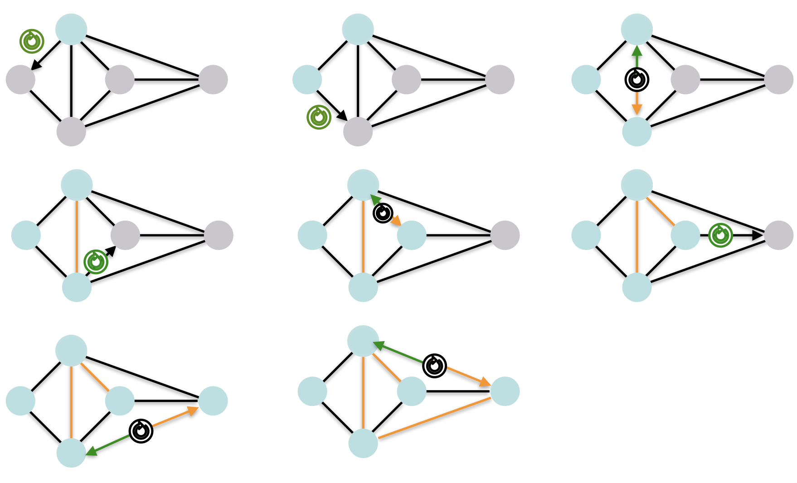
A questo punto l'ultimo nodo ha finito i nodi a cui mandare il Forward Token, quindi manda il Return Token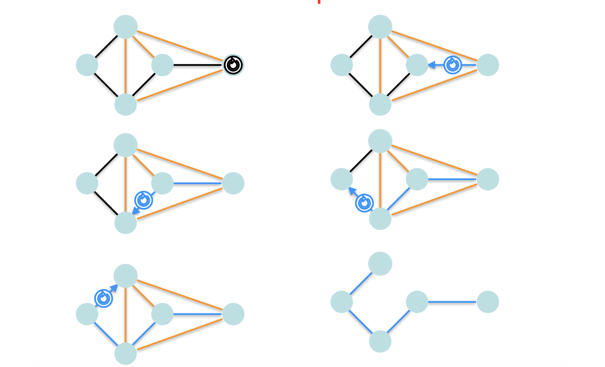
Quando il Return Token arriva alla root, abbiamo lo spanning tree del grafo.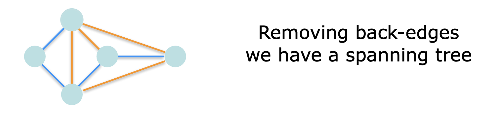
Complessità del protocollo base DFT
Message complexity
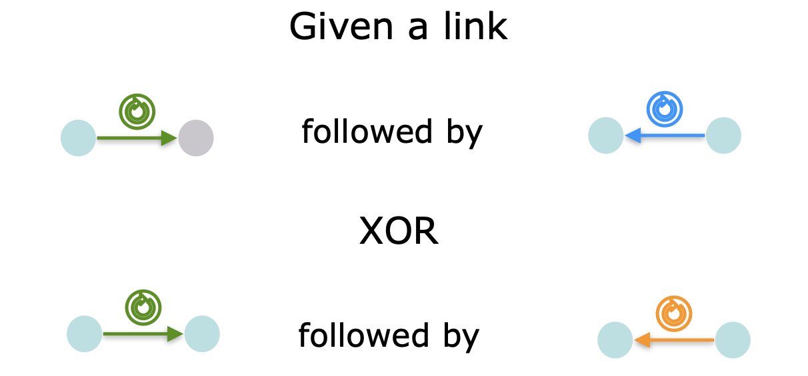
Dato che ad ogni Forward corrisponde una risposta con un Return o Backedge, allora sono 2 i messaggi per ogni arco. Ogni link viene “coinvolto” in modo tale che il totale risulta: $\(\text{Message(DFT)} = 2m\)$
e non si può migliorare in ordine di grandezza:
$\(\text{Message(DFT(G))} \in \Omega(m)\)$ (l’idea della dimostrazione è analoga al lower bound del broadcast).
Time complexity
La traversal richiede che un solo nodo alla volta possieda il token (l’idea di traversal è proprio “passare il token sequenzialmente”). Quindi non puoi avere due token in giro, e non puoi esplorare due rami in parallelo.
Quanti “passi” servono? (catena più lunga)
Nel protocollo DF Traversal (DFT) su ogni link \((x,y)\) succede:
-
se \(x\) manda T (ForwardToken) a \(y\), allora \(y\) risponde a \(x\) con uno tra Return oppure Backedge.
Quindi su ogni link passano esattamente 2 messaggi.
Totale messaggi = \(2m\) e siccome sono inviati in sequenza (uno dopo l’altro), la catena temporale più lunga è lunga \(2m\): $\(T[\text{DFT}] = 2m.\)$
Le slide lo dicono esplicitamente: “Since traversal is sequential, and 2m messages are sent sequentially… TIME COMPLEXITY = 2m”.
Il libro fa la stessa osservazione: “Since the traversal is sequential, \(T=M\); hence \(T=M=2m\).”
Intuizione: in un grafo denso (molti archi), la DFS “perde tempo” a tentare vicini che poi risultano back-edge: ogni tentativo costa comunque un messaggio T + risposta (Backedge), e tutto avviene in coda, uno alla volta.
Lower bound: perché non puoi fare meno di \(n-1\)
Anche se potessi eliminare ogni spreco, devi comunque far sì che ogni nodo venga visitato almeno una volta, in modo sequenziale:
Miglioramento: evitare di mandare il token sulle back-edges (Visited/Ack)
Problema del protocollo base
Nel protocollo base, un nodo può ricevere il token “inutilmente” da più vicini (tentativi di visita che diventano back-edge). L’idea è prevenire questi tentativi: far sapere ai vicini “sono già visited” prima che provino a mandarmi il token.
Idea (Visited/Ack)
Quando un nodo riceve il token la prima volta (vale anche per l’initiator):
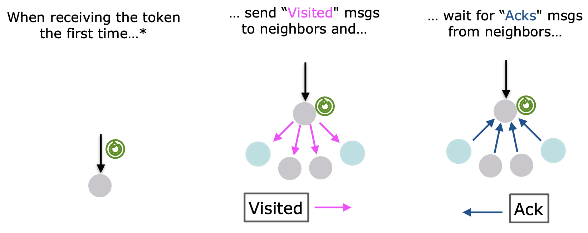
- manda Visited a tutti i vicini
- aspetta un Ack da ciascun vicino
- poi procede come prima, ma manda ForwardToken solo a vicini che risultano non visited
Quando un nodo riceve un messaggio Visited:
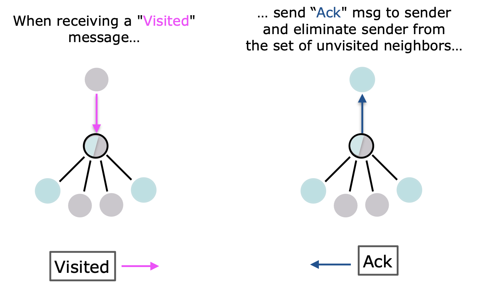
- risponde con Ack - elimina il sender dal proprio insieme Unvisited (così non proverà più a visitarlo col token)Differenza concettuale: DFT normale vs DFT con Visited/Ack
DFT normale (con BackedgeToken)
- Il token “scopre” che un arco è back-edge solo quando prova ad attraversarlo.
- Quindi un nodo può ricevere ForwardToken anche da tanti vicini diversi (tutti i tentativi diventano back-edge), e ciascun tentativo costa tempo sequenziale.
DFT ottimizzata (Visited/Ack)
Le slide dicono: - quando un nodo riceve il token la prima volta, manda Visited ai vicini e aspetta Ack - quando un nodo riceve Visited, risponde Ack ed elimina il sender da Unvisited
Effetto: i back-edge vengono “scoperti” prima che il token ci passi sopra. Quindi il token verrà mandato solo lungo archi che portano davvero a nodi ancora non visitati (i futuri archi dell’albero).
In pratica: la DFT normale “paga” i back-edge in tempo, la versione Visited/Ack li paga in messaggi extra ma paralleli.
Time complexity del miglioramento
Le slide scompongono il tempo in due blocchi: Token lungo l’albero (sequenziale) e Handshake Visited/Ack (parallelo)
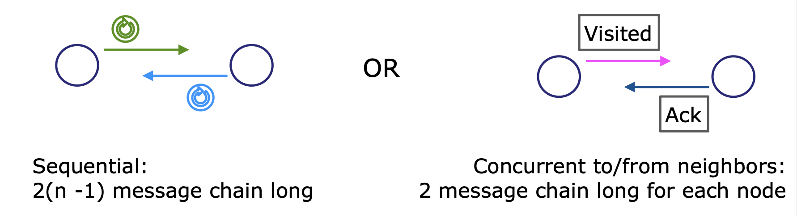
La parte “token lungo l’albero” resta sequenziale: catena lunga \(2(n-1)\).
Se eviti di mandare il token sui back-edge, il token attraversa solo gli archi dell’albero DFS costruito.
Un albero ha \(n-1\) archi, e su ciascun arco dell’albero il token fa “andata e ritorno” (Forward + Return), quindi: $\(2(n-1)\)$ messaggi in catena sequenziale.
Gli scambi Visited/Ack \((2n)\) verso i vicini avvengono in parallelo per ogni nodo (catena lunga 2 per nodo), e il contributo massimo complessivo porta alla stima:
$\(2(n-1) + 2n = 4n - 2\)$ quindi:$\(\text{Time} \in O(n)\)$ Intuizione decisiva: con Visited/Ack, il costo che prima dipendeva da \(m\) (tentativi su tanti archi) viene “spostato” in una fase locale parallela; la parte davvero sequenziale resta legata alla dimensione dell’albero (\(n-1\)), non alla densità del grafo.
Message complexity del miglioramento
Conteggio come nelle slide:
-
per ogni arco dell’albero: \(2\) messaggi di token
-
per ogni arco non d’albero: fino a \(4\) messaggi (Visited/Ack in entrambe le direzioni, concettualmente)
Totale:$\(2(n-1) + 2(n-1) + 4(m-(n-1)) = 4m\)$ quindi:$\(\text{Message} \in O(m)\)$
TODO: da qui
Confronto qualitativo con SHOUT+ e nota sul diametro
-
\(\text{Message(SHOUT+)} = 2m\)
-
\(\text{Message(DFT)} = 2m\) (più eventuali overhead se usi l’ottimizzazione con Visited/Ack, che porta a un costante maggiore)
Punto importante: tecniche diverse costruiscono spanning tree diversi; inoltre, lo stesso protocollo sullo stesso grafo può produrre alberi diversi in esecuzioni diverse (dipende dall’ordine con cui scegli pick(Unvisited) e dai tempi). Con SHOUT non puoi prevedere quale spanning tree ottieni.
In generale, DFT può costruire alberi con diametro pessimo (molto grande), e per broadcasting sarebbe ideale avere un albero con diametro piccolo. Una strategia “ideale” è costruire un BFS tree radicato in un centro del grafo, ma trovare il centro e costruire BFS tree può essere costoso.
Mini-checklist da esame (cose da saper dire al volo)
-
Definizione di entry e perché determina il parent
-
Perché ForwardToken su nodo già visited ⇒ BackEdgeToken
-
Perché “rimuovendo le back-edges” ottieni un albero
-
Complessità base: $\(2m\)$ messaggi e $\(2m\)$ tempo; LB tempo $\(\ge n-1\)$
-
Ottimizzazione Visited/Ack: tempo $\(O(n)\)$ e messaggi $\(O(m)\)$ con costante \(\approx 4m\)